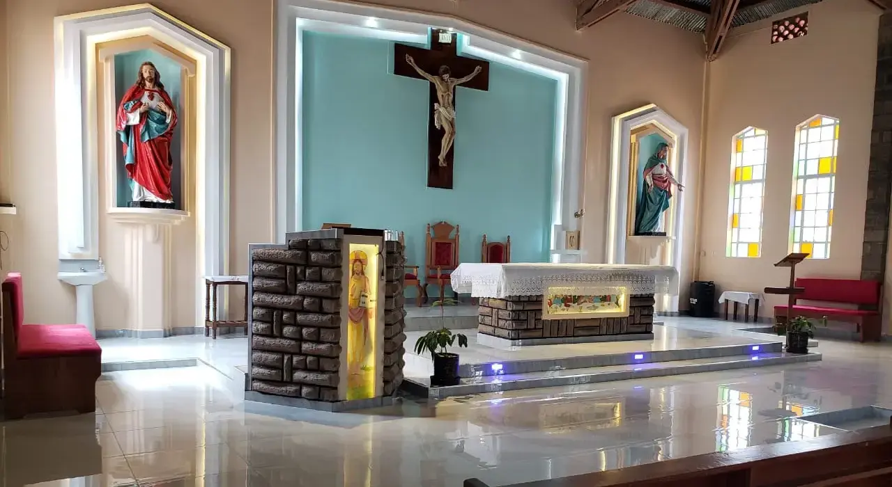

Our Outstations
Ruku Catholic Church serves several outstations in the surrounding areas. These smaller worship centers allow us to bring the sacraments and pastoral care closer to communities throughout our parish territory.
-

St. Peter Outstation
Location: 5km North of Ruku Center
Mass Schedule: Sundays at 10:00 AM (Kiswahili)Contact: John Mwangi - 0722 123 456
-
St. Paul Outstation
Location: Ruku East near Market
Mass Schedule: Sundays at 8:00 AM (English)Contact: Paul Kamau - 0723 456 789
-
St. Mary Outstation
Location: Ruku West Village
Mass Schedule: Saturdays at 4:00 PM (Kikuyu)Contact: Mary Wanjiku - 0711 222 333
-
St. Joseph Outstation
Location: Ruku South near Primary School
Mass Schedule: Sundays at 11:30 AM (Kiswahili)Contact: Joseph Maina - 0720 444 555
For more information about any of our outstations or to inquire about starting a new outstation in your area, please contact the parish office or speak with one of our priests after Mass.